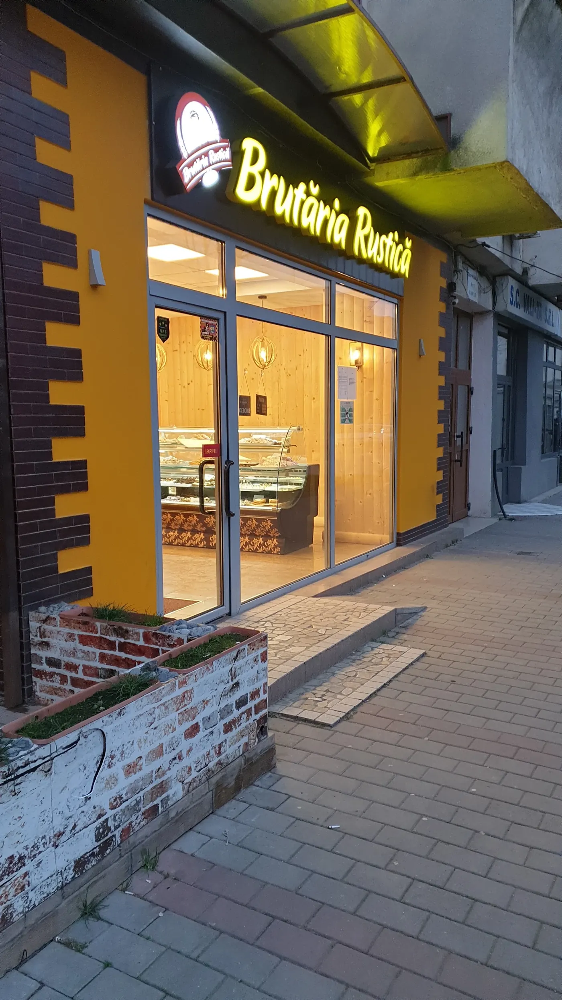
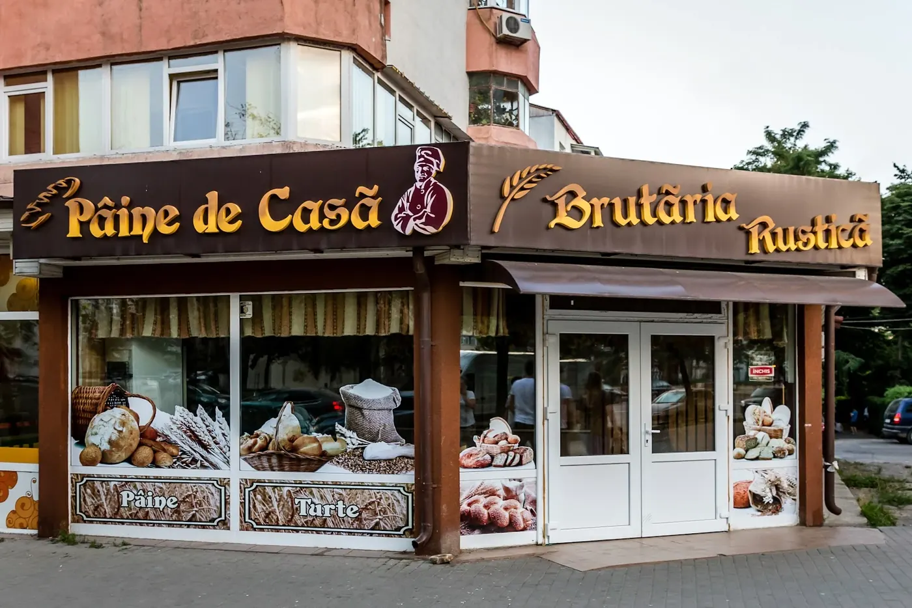
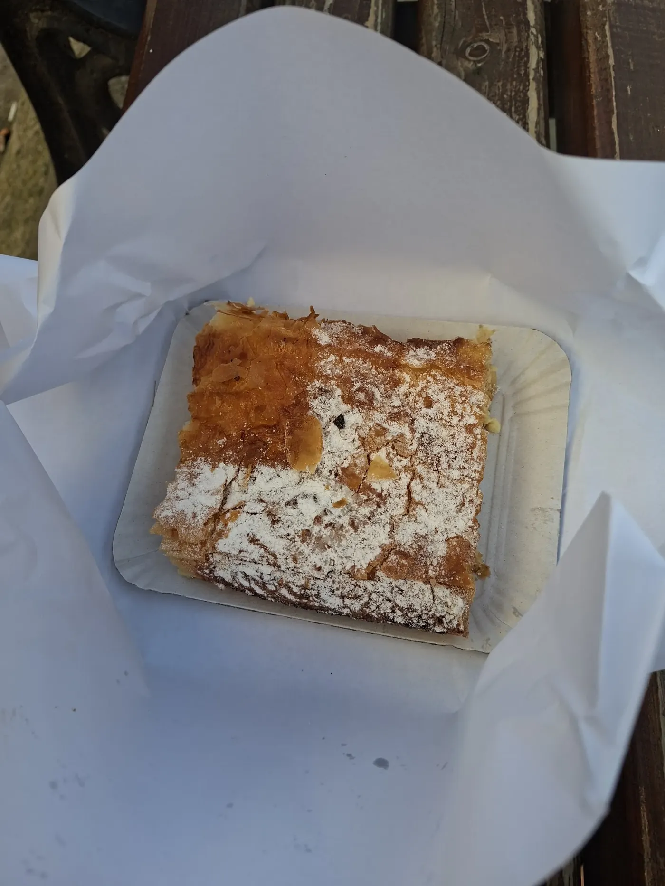

{{Brutărie · Piața Voievozilor 9 · Iași|Bakery · Piața Voievozilor 9 · Iași|Padaria · Piața Voievozilor 9 · Iași}}
{{Pâine de casă.|Homemade bread.|Pão caseiro.}}{{De la 07:30, în fiecare zi.|From 7:30, every day.|Desde as 07:30, todos os dias.}}
{{Pâine, turte, colaci, plăcinte, strudel cu mere, spritate și chec, în Complex Minerva. Unele produse se pot comanda din timp: scrie-ne ce vrei și la ce oră treci.|Bread, flatbreads, colaci, pies, apple strudel, piped biscuits and pound cake, in the Minerva complex. Some things can be ordered ahead: tell us what you want and when you’ll come by.|Pão, broas, colaci, tartes, strudel de maçã, biscoitos e bolo inglês, no Complexo Minerva. Alguns produtos podem ser encomendados com antecedência: diga o que quer e a que horas passa.}}
{{Pe raft|On the shelf|Na vitrina}}
{{Pâine, plăcinte și ceva dulce.|Bread, pies and something sweet.|Pão, tartes e qualquer coisa doce.}}
{{Clienții spun că porțiile sunt generoase. Pune ce-ți trebuie deoparte și treci să le iei.|Customers say the portions are generous. Put aside what you need and come pick it up.|Os clientes dizem que as porções são generosas. Guarde o que precisa e passe para levantar.}}
{{Precomandă|Pre-order|Pré-encomenda}}
{{Ca aluatul: în trei timpi.|Like dough: in three stages.|Como a massa: em três tempos.}}
{{Alegi produsele|Pick your items|Escolhe os produtos}}
{{Din vitrină: pâine, colaci, plăcinte, chec. Câte bucăți vrei din fiecare.|From the shelf: bread, colaci, pies, cake. As many pieces as you need.|Da vitrina: pão, colaci, tartes, bolo. Quantas unidades quiser.}}
{{Spui ziua și ora|Choose day and time|Diz o dia e a hora}}
{{Azi, mâine sau altă zi, în programul brutăriei. Bonul se scrie singur.|Today, tomorrow or another day, within opening hours. The slip writes itself.|Hoje, amanhã ou outro dia, dentro do horário. O talão escreve-se sozinho.}}
{{Trimiți și aștepți confirmarea|Send and wait for the OK|Envia e espera a confirmação}}
{{Pe WhatsApp sau prin SMS, la 0743 904 135. Brutăria îți confirmă comanda.|By WhatsApp or text to 0743 904 135. The bakery confirms your order.|Por WhatsApp ou SMS para o 0743 904 135. A padaria confirma a encomenda.}}
{{Începe precomanda|Start your pre-order|Começar a pré-encomenda}}

{{Ce spun clienții|What customers say|O que dizem os clientes}}
{{Brutăria de la colț.|The bakery on the corner.|A padaria da esquina.}}
- {{Gramaj generos|Generous portions|Porções generosas}}{{Ce cumperi la bucată ține de foame.|What you buy by the piece really fills you up.|O que compra à unidade mata mesmo a fome.}}
- {{Se poate comanda din timp|You can order ahead|Pode encomendar antes}}{{Unele produse le poți cere în avans, ca să fie gata când treci.|Some items can be requested in advance, ready when you come by.|Alguns produtos podem ser pedidos com antecedência.}}
- {{De la pâine la chec|From bread to cake|Do pão ao bolo}}{{Pâine, plăcinte și colaci, dar și patiserie: spritate, chec, strudel.|Bread, pies and colaci, plus pastries: piped biscuits, pound cake, strudel.|Pão, tartes e colaci, e também pastelaria: biscoitos, bolo inglês, strudel.}}
{{Program|Opening hours|Horário}}
{{Deschidem la 07:30.|We open at 7:30.|Abrimos às 07:30.}}
{{Piața Voievozilor 9, în Complex Minerva. Duminica închidem la 14:00.|Piața Voievozilor 9, in the Minerva complex. On Sundays we close at 2 pm.|Piața Voievozilor 9, no Complexo Minerva. Ao domingo fechamos às 14:00.}}
{{Sună|Call|Ligar}}{{Cum ajungi|How to get here|Como chegar}}
{{Vitrina|The shelf|A vitrina}}
{{Ce găsești pe raft.|What’s on the shelf.|O que há na vitrina.}}
{{Pâine, colaci și plăcinte, apoi partea dulce. Adaugă ce vrei la precomandă; prețurile le afli la brutărie.|Bread, colaci and pies, then the sweet side. Add what you want to your pre-order; prices are at the bakery.|Pão, colaci e tartes, depois a parte doce. Junte o que quiser à pré-encomenda; os preços estão na padaria.}}
{{Sortimentul se schimbă de la o zi la alta. Sună la 0743 904 135 să afli ce e azi pe raft și cât costă.|The selection changes from day to day. Call 0743 904 135 to hear what’s on the shelf today and the prices.|A oferta muda de dia para dia. Ligue para o 0743 904 135 para saber o que há hoje e os preços.}}
{{Precomandă pentru ridicare|Pre-order for pick-up|Pré-encomenda para levantar}}
{{Pune deoparte, treci și ia.|Set it aside, come and collect.|Guarde já, passe e leve.}}
{{Alegi produsele, ziua și ora. Bonul se trimite pe WhatsApp sau prin SMS, iar brutăria îți confirmă.|Pick items, day and time. The slip goes by WhatsApp or text, and the bakery confirms.|Escolha produtos, dia e hora. O talão segue por WhatsApp ou SMS e a padaria confirma.}}
{{Brutăria|The bakery|A padaria}}
{{„Pâine de casă”, scrie pe firmă.|“Pâine de casă”, says the sign.|“Pâine de casă”, diz o letreiro.}}
{{Brutăria Rustică e o brutărie de cartier în Piața Voievozilor, în Complex Minerva. Pâine și turte, colaci și plăcinte, spritate și chec, de dimineața de la 07:30.|Brutăria Rustică is a neighbourhood bakery on Piața Voievozilor, in the Minerva complex. Bread and flatbreads, colaci and pies, piped biscuits and cake, from 7:30 in the morning.|A Brutăria Rustică é uma padaria de bairro na Piața Voievozilor, no Complexo Minerva. Pão e broas, colaci e tartes, biscoitos e bolo, desde as 07:30.}}


{{Bine de știut|Good to know|Bom saber}}
{{Unele produse se pot comanda în avans. Folosește precomanda sau sună.|Some items can be ordered in advance. Use the pre-order or call.|Alguns produtos podem ser encomendados. Use a pré-encomenda ou ligue.}}
{{Plata cu cardul:|Card payment:|Pagamento com cartão:}} {{de confirmat|to be confirmed|a confirmar}}
{{Piața Voievozilor 9, Complex Minerva, 700589 Iași.|Piața Voievozilor 9, Minerva complex, 700589 Iași.|Piața Voievozilor 9, Complexo Minerva, 700589 Iași.}}
{{Contact și program|Visit and hours|Contactos e horário}}
{{Piața Voievozilor 9, Complex Minerva.|Piața Voievozilor 9, Minerva complex.|Piața Voievozilor 9, Complexo Minerva.}}
Brutăria Rustică
Piața Voievozilor 9, 700589 Iași
{{în Complex Minerva|in the Minerva complex|no Complexo Minerva}}